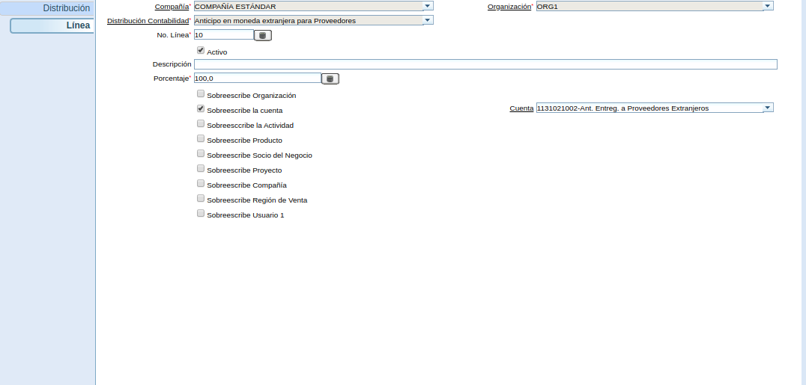
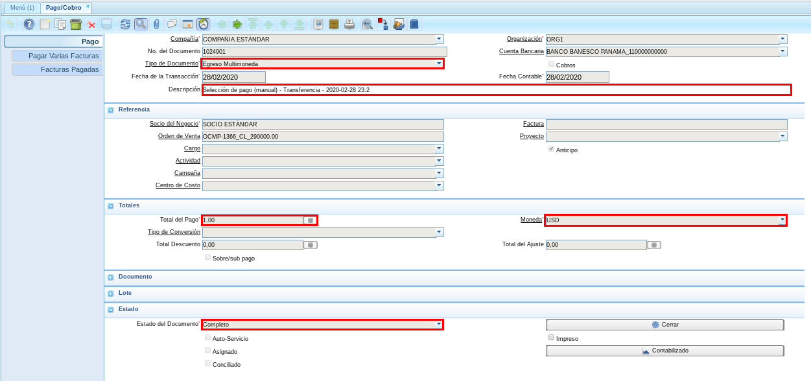
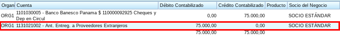

Procedimiento para Anticipos en Multimonedas con Distribución Contable¶
El presente material elaborado por ERPyA pretende ofrecerle una explicación eficiente a nuestros clientes para realizar el “Procedimiento para Anticipos en Multimoneda con Distribución Contable”, considerando la distribución entre cuentas nacionales e internacionales en la versión 3.7.0 de ADempiere. El cambio fue realizado en el mismo con la finalidad de reflejar los diferentes anticipos realizados en multimoneda en la cuenta contable correspondiente.
Configuración de la Distribución Contable¶
ERPyA realizó la configuración de la distribución contable de la seguiente manera.

Imagen 1. Configucación Contable
Podrá visualizar en la pestaña “Línea”, los detalles de la línea de la distribución.

Imagen 2. Pestaña Línea
Procedimiento¶
Orden de Compra¶
Para ejemplificar el cambio realizado es generada una “Orden de compra”, con el socio del negocio “SOCIO ESTÁNDAR”, en moneda “VES” y monto total “290.000,00”, quedando el documento de la siguiente manera.

Imagen 3. Orden de Compra
Orden de Pago¶
Al realizar el procedimiento regular para generar una “Orden de Pago”, utilizando el tipo de documento “Orden de Pago (Ant mult)” y la moneda del anticipo “USD”, el documento quedaría de la siguiente manera.

Imagen 4. Orden de Pago
Note
Recuerde que la moneda seleccionada debe ser la moneda del anticipo y que la tasa de conversión debe estar actualizada.
Selección de Pago¶
Luego se procede a realizar el procedimiento regular de “Imprimir/Exportar”, obteniendo como resultado el siguiente documento.

Imagen 5. Selección de Pago
Podrá visualizar en la pestaña “Línea de Selección de Pago”, la orden de pago creada anteriormente con su respectivo monto.

Imagen 6. Pestaña Línea de Selección de Pago
Consultar Pago Generado con Resultado Contable¶
Al consultar el pago generado en la ventana “Pago/Cobro”, podrá visualizar el pago generado por el monto del anticipo.

Imagen 7. Pago Generado
Note
El pago es generado con la moneda “USD” del anticipo, aun cuando la orden de compra se encuentra con moneda “VES”.
El resultado generado de la transacción contable quedaría de la siguiente manera.

Imagen 8. Resultado Contable del Pago
Note
En caso de registrar el pago desde la ventana “Pago/Cobro”, seleccionar el tipo de documento “Egreso Multimoneda”.